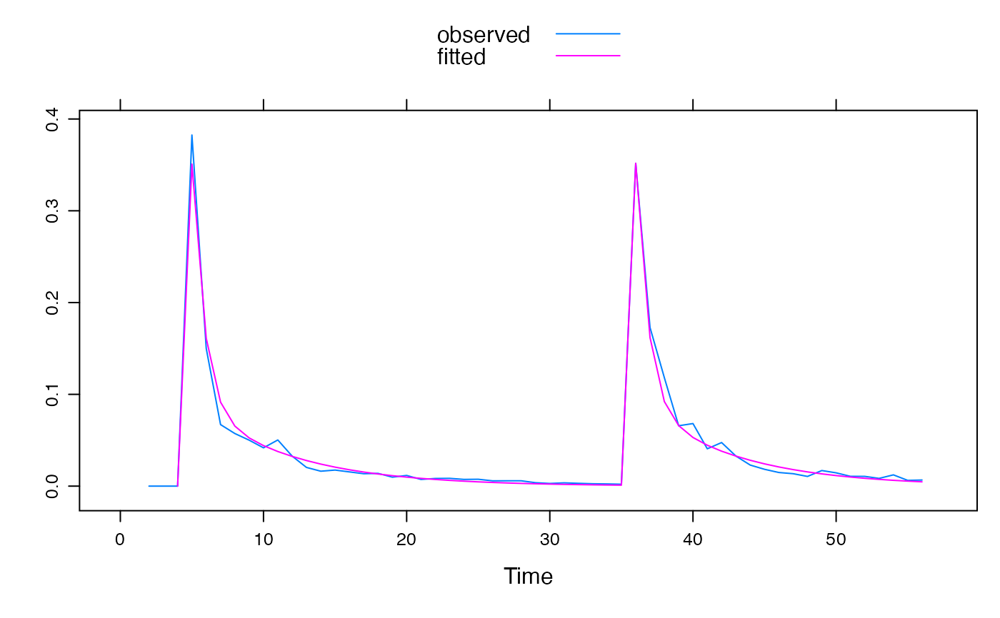

R/armax.sriv.fit.R
armax.sriv.fit.RdCalibrate unit hydrograph transfer function models (armax or
expuh) using Simple Refined Instrumental Variables (SRIV)
method.
armax.sriv.fit(
DATA,
order = hydromad.getOption("order"),
delay = hydromad.getOption("delay"),
noise.order = hydromad.getOption("riv.noise.order"),
fixed.ar = NULL,
...,
fallback = TRUE,
na.action = na.pass,
epsilon = hydromad.getOption("sriv.epsilon"),
max.iterations = hydromad.getOption("sriv.iterations")
)a ts-like object with named columns:
observed input time series.
observed output time series.
the transfer function order. See armax.
delay (lag time / dead time) in number of time steps. If missing, this will be estimated from the cross correlation function.
placeholder
placeholder
further arguments may include
~~Describe trace here~~
placeholder
placeholder
placeholder
placeholder (i.e. negative or imaginary poles) are detected.
a tf object, which is a list with components
the fitted parameter values.
the fitted values.
the residuals.
the (possibly fitted) delay time.
In normal usage, one would not call these functions directly, but rather
specify the routing fitting method for a hydromad model using
that function's rfit argument. E.g. to specify fitting an
expuh routing model by SRIV one could write
hydromad(..., routing = "expuh", rfit = "sriv")
which uses the default order, hydromad.getOption("order"), or
hydromad(..., routing = "expuh", rfit = list("sriv", order =
c(2,1))).
Young, P. C. (2008). The refined instrumental variable method. Journal Européen des Systèmes Automatisés 42 (2-3), 149-179. http://dx.doi.org/10.3166/jesa.42.149-179
Jakeman, A. J., G. A. Thomas and C. R. Dietrich (1991). System Identification and Validation for Output Prediction of a Dynamic Hydrologic Process, Journal of Forecasting 10, pp. 319--346.
Ljung, Lennart (1999). System Identification: Theory for the User (second edition). Prentice Hall. pp. 224-226, 466.
U <- ts(c(0, 0, 0, 1, rep(0, 30), 1, rep(0, 20)))
Y <- expuh.sim(lag(U, -1), tau_s = 10, tau_q = 2, v_s = 0.5, v_3 = 0.1)
set.seed(0)
Yh <- Y * rnorm(Y, mean = 1, sd = 0.2)
fit1 <- armax.sriv.fit(ts.union(U = U, Q = Yh),
order = c(2, 2), warmup = 0
)
fit1
#>
#> Unit Hydrograph / Linear Transfer Function
#>
#> Call:
#> armax.sriv.fit(DATA = ts.union(U = U, Q = Yh), order = c(2, 2),
#> warmup = 0)
#>
#> Order: (n=2, m=2) Delay: 1
#> ARMAX Parameters:
#> a_1 a_2 b_0 b_1 b_2
#> 1.145551 -0.244799 0.350852 -0.240868 -0.007109
#> Exponential component parameters:
#> tau_s tau_q v_s v_q v_3
#> 6.69975 0.79487 0.66335 0.40223 -0.02904
#> TF Structure: S + Q + inst. (three in parallel)
#> Poles:0.2842, 0.8613
#>
xyplot(ts.union(observed = Yh, fitted = fitted(fit1)),
superpose = TRUE
)
